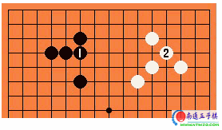
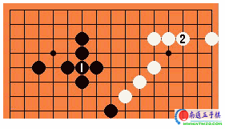
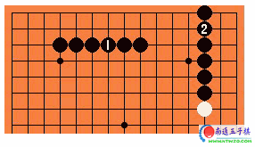
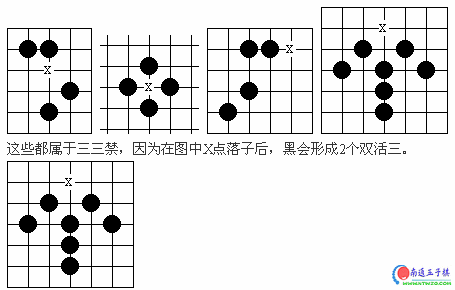
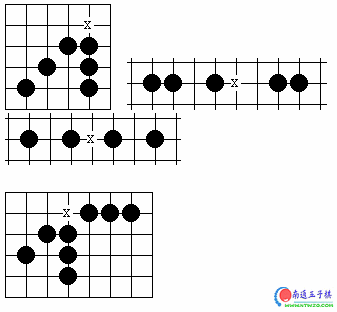
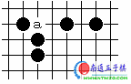
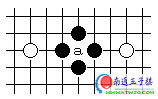
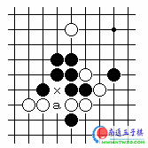
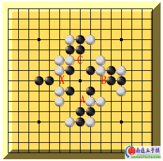

五子棋初探
#1 五子棋初探 作者：有志青年 发表时间：2007-2-23 12:24:28
写在开篇的话：
五子棋有着悠久的历史，有证可考的最少也有2500年的历史了。
历史毕竟是历史，对于一个棋手来说，我始终认为可了解也可不了解。毕竟作为一个棋手最重要的是技术，而不是棋的历史。一项运动，知道它的一些历史，无非只能增加一些闲谈的花絮，对棋手来说，似乎并没有什么实质性的意义。所以在《五子棋初探》这一系列文章中，我不想去对这项运动作过多的探讨也是这个道理。如果有兴趣的朋友想去了解五子棋的发展历史，可以咨询一些相关的五子棋专业站点。
本系列文章将主要介绍我个人在五子棋这项竞技运动中的一些心得和感受，由于个人水平有限，这不适合职业棋手阅读。如果你是获得或相当于国家职业段位的选手，那么你需要阅读专业的技术书籍。
五子棋，在职业棋手中喜欢称之为连珠。
第一章 五子棋的现状
五子棋在民间流行相当广泛，几乎可以说，人人都知道，也人人都可以下。五子棋所以流行得如此广泛，是因为五子棋不像围棋那么深奥，那么复杂，而是简单到只要你把五颗子连续地摆在一个直线上就胜利了。尽管五子棋简单到如此地步，为什么还有那么多人热衷于这项运动呢？我个人的观点认为，首先它是一项竞技型的运动，有竞争就会给人带来刺激，就能使人在竞技中获得愉悦。其二是五子棋在民间 给人造成了一个非常严重的误导。很多朋友在一提到五子棋的时候，首先想到的是“五子棋是属于孩子们才玩的弱智游戏”。其实这个概念的出现是很正常的，也是和连珠运动的整体水平相适应的。
通常民间的五子棋都是采用的无禁手（关于禁手的概念在以后介绍）的下法，规则也是有一个——连成五。这对于一个职业棋手看来，确实是没有什么实在的意义，也确实是一种孩子们玩的弱智游戏。大凡对五子棋有些了解的朋友，或者稍微下过一段时间的朋友，如果你对他说：“五子棋是属于孩子们才玩的弱智游戏”，相信他一定会反驳你。因为他开始了解五子棋了，尽管可能他的水平尚且谈不上是入门，但他一定对五子棋比你有更深的一些了解。
五子棋在民间有着深厚的基础，但却是又形成了严重的两极分化现象，一部分职业棋手水平相当的高，在国内和国际上都享有相当的知名度，而更多的人却仍然停留在一个不入行的状况。连珠运动缺少连接职业和常人之间的这么一层，也就是所谓的中流砥柱的中间力量了。近年来连珠运动的发展方兴未艾，网络游戏的出现为连珠的交流提供了一个很好的平台，能有更多的人了解和学习连珠。但网络也有不好的一面，因为网络是虚拟的，所以也造就一大批虚假的棋手，这一部分棋手有名无实，也许在网络的某一个社区名气很大，但在现实里却是棋技平平。这一现象是因为计算机的发展，给人们越来越多的提供了软件服务的缘故所造成的。
第二章 职业连珠竞技规则
在民间连珠的竞技规则只有一项，那就是只要在一根线上连成五就是胜利，对于这个规则没有更多的必要去介绍。因此不在本系列文章中作为探讨。本章中只介绍职业连珠规则。
目前国际上五子棋通常采用瑞士制作为标准，在国内参考借鉴中国围棋、象棋规则中积分编排的优点部分以及参考徐善瑶先生《定位编排法》，针对现行积分编排的一些弊病修订而成。
有关职业连珠的规则请参见《中国五子棋竞赛规则》。其中对五子棋的棋具、比赛规则、比赛阶段划分、积分标准、编排等均有明确说明和规定。
第三章 实战对局中对规则的一些补充说明
在实际的对局中通常采用的职业规则是“三手交换五手两打走禁手判负”。通常喜欢简称为“三手”下法。
针对这个概念我们来做一个解释：
三手交换：黑开局走第一颗子落天元，白落第二子以后确定是属于哪一种打法，连珠打法只有两种，既：1、直止打法
2、斜止打法
黑方落第三子确定连珠开局的名称。
黑第三手落子以后，确定出开局的名称，此时白有权根据黑所确定的开局选择是否行黑棋或继续执白棋——此为三手交换。
五手两打：执黑的一方在走第5手的时候必须连续走两子，以便白根据黑第5子所落的两点位置来选择去掉其中最强的一个点，此称五手两打。
走禁手就判负：在职业比赛规则中，确立了对黑棋禁手的限制，所谓禁手通常来说有三种形式：
1、三三禁手：黑落子后盘面上形成两个或两个以上的双活三，如下图：

2、四四禁手：黑落子后盘面上形成两个或两个以上的四，如下图：

3、长连禁手：黑落子后盘面上形成大于5子以上的连，如下图：

以上三种形式都判定为黑负。
有关禁手，将在后边的章节里通过图示再来做详细的介绍。
#2 Re:五子棋初探 作者：有志青年 发表时间：2007-2-23 12:29:58
第四章 禁手的判断
禁手的判断，实在有必要单独作为一章来进行讲解。禁手的定义我们在上一章中已经作了初步的介绍，但仅仅是最初步的介绍是远远不够的。在实际的对局中因为禁手的概念不清，常常给棋手造成许多困惑。
首先我们说说三三禁手。
在定义上对三三禁手的解释是：黑落子后盘面上形成两个或两个以上得双活三；这个定义不能增减，并必须理解清楚，要点是，什么是两个或两个以上的双活三？让我们看以下的这些图例：

这个图中表示的也是禁手，尽管行成的是两个双活三和一个跳四，但符合定义：黑落子后盘面上形成两个或两个以上得双活三。所以我们说它依然出现了三三禁手。
以下图片为四四禁，因为符合定义：黑落子后盘面上形成两个或两个以上的四（能发展成5的四）。

长连禁手是最好判断的，只要落子后形成5以上的连都叫长连。
以上是常见的禁手形式，作为禁手判断，要点是要能充分理解定义。
这里有一个概念，就是禁手点，和禁手的概念：
1、禁手点，在棋盘上如果落子后能形成禁手的位置。
2、禁手，是指已经落在禁手点上的那一手棋。
禁手的判断所以复杂是因为其中含有真假禁手的概念，如何识别假禁手，将在下一章中介绍。
#3 Re:五子棋初探 作者：有志青年 发表时间：2007-2-23 12:33:12
第五章 非禁手的判断
前边一章我们讲述了禁手的一般性简单判断。而在实际对局中对禁手的判断往往是相当复杂的，有时候会出现多层禁手，一层套一层，初学的朋友常常会被这些复杂的禁手概念搞的头晕眼花。
本章我们就一般性的简单非禁手（假禁手）做一个粗略的介绍。
先看下边的图形：

“a”这一点不是三三，因为横向不是活三，而是一个长连禁手的骨架(曰本称为“六腐”)。

“a”这一点也不是三三，因为横向也不是活三，而是一个假活三(此形状曰本称之为“下止”)。

“a”这一点有可能被看作是三三。但是，由于竖跳三的下一手在x点将成四四禁手而不能走，这种竖三属于死三，所以a点不算三三。
下面是一道关于禁手的题目，图中的X点到底是不是禁手呢？

当黑着X位时同时形成二个"三"，一个是连续型的"三"，它可以通过二端的延伸成为"活四"，因此它是真正的"三"；另一个是间断型的"三"，它要成为"活四"就必须走A位，因此A位必须不是"禁手"点。可是当黑棋着A位时又同时形成三个"先手"，一个是将原本的间断型的"三"走成"活四"，并形成另的二个"三"。它们也分别是间断型和连续型的二个，其中连续型的"三"可以形成"活四"，是"三"；而那个间断型"三"的判断又取决于B位是否为"禁手"点：如果B点是"禁手"，那么这个间断型的"三"就不是真正的"三"，因此A点是"四、三"胜点，可以下子，同时证明X、A之间的间断型的"三"是真正的"三"，所以X点是禁手点。但这只是建立在假设B点是"禁手"的基础上，要着实判断X点的问题必须判断B点。同理，判断B点又必须再判断C位，从图上看C点仅形成一个真正的"三"，并使从B到C的"三"成为"活四"，因此C不是"禁手"。且慢，我们的判断是从定义出发，首先，X的是否为"禁手"要判断一子下去同时形成几个"先手"，先前已证明那个连续型的"三"是真正的"三"，现只要判断这个间断型的"三"，而判断的同时又需判断其它的"禁手"问题，但请注意：虽然在判断X点时，X点上没有子，然而当判断X与A之间的"三"的时候，必须假设X点上已经下了一枚黑子，只有这样才有可能进行正确的判断。因为在判断中，X点是否有子，有可能影响到判断的结果，我们仅仅判断这个间断型的"三"是否能下成"活四"，而不是其它的。在此因为在判断C点的同时，由于想到了X点上有子，因此C是"禁手"点，因为它是"四、三、三"点，从而证明从C到B的间断型的"三"是假的（因为它无法走C位使之成为"活四"），即B点可以下子（不是"禁手"点），从而说明A点是"禁手"（"四、三、三"），从而可见X、A之间的"三"不是真正的，因此，黑棋走X位只形成一个"三"，不是禁手。
这是一个复杂假禁手的判断题，在实际对局中可能还会遇见更复杂的真假禁手判断，这需要棋手有足够的计算深度，一层一层的去剥开来分析。
#4 Re:五子棋初探 作者：有志青年 发表时间：2007-2-23 12:35:45
第六章 棋风与棋德
作为一个棋手，棋技固然重要，但棋德更重要。棋是一种人生，也是一种态度。一个好的棋手不仅要有好的技术，更应有一个好的棋德，古人云，见棋如见人。很多时候，我们通过对一个棋手的行棋风格，便可基本判断出棋手的一些品行，不管你是否希望在这项运动中得到发展，也或你仅仅是一时的兴趣所为，我们都建议你认真的去面对你所行的每一盘棋。
一、应注意以下几个问题：
1、 棋手应有一定地操守把持能力，严于律己，不在对局中喧哗、催促影响对手思考。注意自己的言辞，严禁与他人争吵或辱骂他人。
在网络里下棋，常常可以遇见一些棋手，因为对方行棋较慢，而拼命的催促对方，这是一种不好的行为，也是非常不礼貌的表现。要知道，对局是有各自的自有时间和公用时间限制的，任何棋手都有使用这些时间的权利，那怕在对方全部可支配的时间中一手棋都不走，也是对方的权利，都应该得到尊重，这才是一种公平的竞技。
2、保持平和的心态，冷静思考认真对局。
在现实的对局中，有时候会遇见一些棋手，在拼命的消耗了大量的时间后，使用了PASS权限。这是一种心理战术，也是对规则的合理运用。但这常常会造成另一方棋手的冲动，误解为自己被对方调侃了，因此便会有些激愤。其实这大可不必，按照规则，棋手有行棋的权利，也有放弃行棋的权利。使用PASS权同样属于技术性处理。
3、胜不骄、败不磊，保持良好的心态。
经常下棋的朋友，只要注意观察，常常会发现一个现象，就是当两个水平相当的棋手对局时候，会出现拉锯式的胜负状况，但这个状况一但被突破了，胜的一方会继续出现连胜，输的一方会出现连负的局面。其实这是一种心理因素造成的。棋不会垮，心理垮了就会全盘皆输。
4、对于比自己强大的对手，应报着学习的心态。对比自己弱小的棋手，应报有平等的心态。对强者惧怕、弱者欺凌，不是一个好的棋手应该做的事情。
以前我常常遇见一些朋友，在和我对局过程中告诉我：心理很紧张。其实这个大可不必。棋上是没有高低贵贱之分的，五子棋也是一样，只要你熟悉一个开局的全部变化，那这个开局对你来说就是必赢的。
我们在网络里下棋也常常可以看到有这样的现象，就是经常有人踢社。踢社的人一般都有几个比较有一定实力的棋手，被踢的社团一般是新成立的或比较弱小的棋社。踢社是对对方社团的一种侮辱，是一种非常不礼貌的行为，有违一个棋手的职业道德规范，是非常不可取的。通常遇见这类棋手，建议勿需应战，因为这样的棋手，实在不能算的上是一个你值得一战的棋手。
5、注意行棋的礼节。通常在五子棋中行白棋的一方，落第二子时，应落在自己的一方。以表示对对方的尊重。在网络里下棋，应该落在黑子的上方为适宜。
棋手之间应当相互尊重，行棋过程中也要注意相应的礼节。这在一般的棋手中似乎现在已经不是很重视这一点了，甚至很多人已经不了解这个规矩了。通常白2手落在对方一侧，是一种蔑视的含义。和围棋对局中第一子不可下在天元一样的道理。
如果我没有记错的话，在围棋中只有陈祖德当年对曰本棋手的时候，第一手下在了天元，那是一种对对手的藐视，是因为当时的政治因素。
棋是一种精神，也是一种风尚。所以要把行棋中的一些基本礼节单独作为一章，是因为我始终认为拥有高超的棋艺同时还拥有高尚情操和品德的棋手，才能称得上是一流的棋手。
第七章 五子棋开局
前边几章我们分别介绍了五子棋的一般性知识，从本章起，将就五子棋的各种开局作一一介绍。
一、五子棋的打法：
五子棋的打法只有两种：直止和斜止打法。
根据黑第三手的位置，派生出26种不同的开局，如下图附件1所示：
其中必输开局：
游星（附件2） 彗星（附件3）
为了便于记忆，编成顺口溜：
直止13局：
寒星溪月疏星首，花残雨月金星走；
松月丘月新月局，瑞星山月游星丢。
斜止13局：
星月长峡横水流，云月浦月岚月游；
银明斜名是正局，惟有彗星不能走。
1、在直止打法中：
必赢局：花月局、雨月局（理论必赢）
平衡局：瑞星、疏星、丘月、松月
黑优势开局：其他均为优势。
必输局：游星
2、在斜止打法中：
必赢局：浦月、云月、银月（黑避开白骗着后，进入中盘认为是必赢）；
平衡局：斜月（最新研究仍然是黑优）
黑优势开局：其他均为优势开局
必输局：彗星
在26个开局里，必赢3个，必输2个，相同或相似4个，难局2个，那么实际上现在比较有比赛
#5 Re:五子棋初探 作者：花木兰 发表时间：2007-2-25 12:20:45
太长了，有空再看，谢谢#6 Re:五子棋初探 作者：kk1234 发表时间：2007-3-6 15:51:48
老师,头都大了~~~
#7 Re:五子棋初探 作者：三月静观春雨 发表时间：2007-3-7 12:58:34
看了。可第7章不懂#8 Re:五子棋初探 作者：五子天下 发表时间：2008-2-15 20:37:29
哪两大难局？
#9 Re:五子棋初探 作者：汪洋孤舟 发表时间：2008-4-29 12:26:42
又长了见识啊，这个网站真好，天天长见识！#10 Re:五子棋初探 作者：来客沙丝 发表时间：2009-3-18 19:20:48
棋德，棋风很重要，琴棋书画，之所以是修养，主要体现在这点上，水平倒是其次的了。
#11 Re:五子棋初探 作者：启蒙 发表时间：2009-3-19 18:43:58
天元子老师的文章浅显易懂，很适合初学者。我经常去他的BLOG，不过最近好像更新的少了！#12 Re:五子棋初探 作者：星月族 发表时间：2009-12-23 9:18:11
对禁手的理解还需在学习中加深理解，比如在作《三手胜题解》时遇到这样一个局面，在黑13、白14后，本在黑15一点双杀，但以为这是三三禁手不能走，结果始终没能破解，后来看到三三禁手的图解，才明白过来，很顺利地破解了。
=======上图对应的爱五子棋谱代码如下，以便你拆解：========
h8h7i8i7j7h9i6g9i9k9j10k11h6g7j6
======================================================